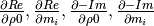

lib_dd package¶
Subpackages¶
Submodules¶
lib_dd.Jacobian module¶
Copyright 2014-2017 Maximilian Weigand
This program is free software: you can redistribute it and/or modify it under the terms of the GNU General Public License as published by the Free Software Foundation, either version 3 of the License, or (at your option) any later version.
This program is distributed in the hope that it will be useful, but WITHOUT ANY WARRANTY without even the implied warranty of MERCHANTABILITY or FITNESS FOR A PARTICULAR PURPOSE. See the GNU General Public License for more details.
You should have received a copy of the GNU General Public License along with this program. If not, see <http://www.gnu.org/licenses/>. Jacobian implementation for a Debye-Decomposition style function Resistivity formulation
-
lib_dd.Jacobian.Jacobian(omega, pars, s, partials)¶ Calculate the Jacobian matrix for a given set of parameters m and relaxation times s (
 ).
).Parameters: - omega (Angular frequencies
 ) –
) – - pars (
 and
and  values in the parmeterisation) – (linear,log10) of the provided partials
values in the parmeterisation) – (linear,log10) of the provided partials - s (
 values in log10) –
values in log10) – - partials (List of the four partial derivative functions) – 
Returns: - The derivatives of d Re(rho)/d g_i and d -Im(rho)d g_i in form of a
- 2*K x P matrix (K = number of frequencies), (P = number of model
- parameters)
- omega (Angular frequencies
lib_dd.base_class module¶
Copyright 2014-2017 Maximilian Weigand
This program is free software: you can redistribute it and/or modify it under the terms of the GNU General Public License as published by the Free Software Foundation, either version 3 of the License, or (at your option) any later version.
This program is distributed in the hope that it will be useful, but WITHOUT ANY WARRANTY without even the implied warranty of MERCHANTABILITY or FITNESS FOR A PARTICULAR PURPOSE. See the GNU General Public License for more details.
You should have received a copy of the GNU General Public License along with this program. If not, see <http://www.gnu.org/licenses/>.
-
lib_dd.base_class.determine_tau_range(settings)¶ Return the tau values depending on the settings ‘Nd’, ‘tau_values’ and ‘tau_sel’ in the dict ‘settings’
- Tau values can be set by using one of the following strings in
self.settings[‘tausel’]:
data data_ext factor_left,factor_right ,factor_right factor_left,- Missing values are replaced by one (i.e. the data frequency limits are
- used).
-
lib_dd.base_class.get_tau_values_for_data(frequencies, Nd, factor_left=1, factor_right=1)¶ Return the
values corresponding to the frequency range of
the data set.Parameters: - Nd (number of values per decade) –
- factor_left (factor to divide to the lower limit by) –
- factor_right (factor to multiply to the upper limit) –
Returns: Return type: tau,s with
- Nd (number of
-
class
lib_dd.base_class.integrated_parameters¶ Bases:
objectComputation of integrated paramters. This class is not meant to be used alone, it is meant to be inherited by ‘dd_resistivity_skeleton’
-
compute_par_stats(pars)¶ For a given parameter set (i.e. a fit result), compute relevant statistical values such das
 ,
,  ,
,
 ,
,  ,
, 
Returns: - stat_pars (dict containing the computed parameters)
- Also store stat_pars in self.stat_pars
-
lib_dd.int_pars module¶
Copyright 2014-2017 Maximilian Weigand
This program is free software: you can redistribute it and/or modify it under the terms of the GNU General Public License as published by the Free Software Foundation, either version 3 of the License, or (at your option) any later version.
This program is distributed in the hope that it will be useful, but WITHOUT ANY WARRANTY without even the implied warranty of MERCHANTABILITY or FITNESS FOR A PARTICULAR PURPOSE. See the GNU General Public License for more details.
You should have received a copy of the GNU General Public License along with this program. If not, see <http://www.gnu.org/licenses/>.
Integrated parameters
pars: linear representation of parameters
-
lib_dd.int_pars.U_tau(pars, tau, s)¶ compute uniformity parameter similar to Nordsiek and Weller, 2008:

-
lib_dd.int_pars.decade_loadings(pars, tau, s)¶ Compute the chargeability sum for each frequency decade. Store in linear scale.
-
lib_dd.int_pars.m_data(pars, tau, s)¶
-
lib_dd.int_pars.m_tot(pars, tau, s)¶
-
lib_dd.int_pars.m_tot_n(pars, tau, s)¶
-
lib_dd.int_pars.rho0(pars, tau, s)¶
-
lib_dd.int_pars.tau_50(pars, tau, s)¶
-
lib_dd.int_pars.tau_arithmetic(pars, tau, s)¶
-
lib_dd.int_pars.tau_geometric(pars, tau, s)¶
-
lib_dd.int_pars.tau_max(pars, tau, s)¶
-
lib_dd.int_pars.tau_mean(pars, tau, s)¶
-
lib_dd.int_pars.tau_peaks(pars, tau, s)¶
-
lib_dd.int_pars.tau_x(pars, tau, s)¶ Arbitrary cumultative
 values can be computed using the
environment variable DD_TAU_X: The string separates the requested
percentages as fractions with ‘;’ characters.
values can be computed using the
environment variable DD_TAU_X: The string separates the requested
percentages as fractions with ‘;’ characters.Example
DD_TAU_X=”0.2;0.35;0.6”
lib_dd.interface module¶
Copyright 2014-2017 Maximilian Weigand
This program is free software: you can redistribute it and/or modify it under the terms of the GNU General Public License as published by the Free Software Foundation, either version 3 of the License, or (at your option) any later version.
This program is distributed in the hope that it will be useful, but WITHOUT ANY WARRANTY without even the implied warranty of MERCHANTABILITY or FITNESS FOR A PARTICULAR PURPOSE. See the GNU General Public License for more details.
You should have received a copy of the GNU General Public License along with this program. If not, see <http://www.gnu.org/licenses/>.
Functions common to the Cole-Cole decomposition implementations ccd_single, ccd_time.
-
lib_dd.interface.aggregate_dicts(iteration_list, dict_name)¶ For a given list of NDimInv iterations, aggregate the dictionaries with name ‘dict_name’ (Iteration.dict_name) and return on dict containing the values of all iterations as lists.
-
lib_dd.interface.create_output_dir(options)¶ Create the output directory
-
lib_dd.interface.get_command()¶ Return a string with the full command call, including environment variables.
Environment variables are exported in separate lines
-
lib_dd.interface.load_frequencies_and_data(options)¶ Load frequencies and data from options.frequency_file and options.data_file. Apply certain processing steps such as:
- frequency filtering
- magnitude normalization
Parameters: options (object as created by optparse (e.g. provided by dd_single.py or) – dd_time.py) Returns: - data (data dict)
- options (the options object can be changed by this function, e.g. when the) – data type is changed.
-
lib_dd.interface.prepare_stat_values(raw_values, key, norm_factors)¶ Prepare stat_pars for saving to disc.
This included renormalization or padding for specific keys.
Divide the statistical parameter rho0 by norm_factors and multiply m_tot_n by them.
Returns: values – parameters Return type: NxM array, with N the number of spectra, and M the number of
-
lib_dd.interface.save_rms_values(rms_list, rms_names)¶ Save the RMS values to the corresponding filenames
-
lib_dd.interface.save_stat_pars(stat_pars, norm_factors=None)¶ Saves to current working directy.
lib_dd.plot module¶
Copyright 2014-2017 Maximilian Weigand
This program is free software: you can redistribute it and/or modify it under the terms of the GNU General Public License as published by the Free Software Foundation, either version 3 of the License, or (at your option) any later version.
This program is distributed in the hope that it will be useful, but WITHOUT ANY WARRANTY without even the implied warranty of MERCHANTABILITY or FITNESS FOR A PARTICULAR PURPOSE. See the GNU General Public License for more details.
You should have received a copy of the GNU General Public License along with this program. If not, see <http://www.gnu.org/licenses/>.
-
class
lib_dd.plot.plot_iteration¶ Bases:
objectThis class defines an override function for the default plot function of the Iteration class. The new plot function is aware of the Cole-Cole Decomposition approach and will plot more information (i.e. the RTD)
In addition, it will renormalise data if necessary.
-
create_figure()¶
-
finalize_fig()¶
-
plot(it, norm_factors=None)¶
-
lib_dd.plot_stats module¶
lib_dd.starting_parameters module¶
-
class
lib_dd.starting_parameters.starting_parameters¶ Bases:
object-
estimate_starting_parameters(spectrum)¶
-
estimate_starting_parameters_1(re, mim)¶ Heuristic 1 to generate a suitable starting distribution for a fit
TODO: Florsch et al. 2014 has a name for this kind of heuristic…
-
estimate_starting_parameters_2(re, mim)¶ Try to find good starting parameters using a gaussian m-distribution.
This should only work well if we have only one peak in the data (imaginary/phase)
-
estimate_starting_parameters_3(re, mim)¶
-
lib_dd.test_functions module¶
Copyright 2014-2017 Maximilian Weigand
This program is free software: you can redistribute it and/or modify it under the terms of the GNU General Public License as published by the Free Software Foundation, either version 3 of the License, or (at your option) any later version.
This program is distributed in the hope that it will be useful, but WITHOUT ANY WARRANTY without even the implied warranty of MERCHANTABILITY or FITNESS FOR A PARTICULAR PURPOSE. See the GNU General Public License for more details.
You should have received a copy of the GNU General Public License along with this program. If not, see <http://www.gnu.org/licenses/>.
-
lib_dd.test_functions.assert_single_t_rms_pos_change(rms_old_result, rms_new_result, allowed_percentage)¶ Wrap assertTrue statements around the function
-
lib_dd.test_functions.single_t_rms_pos_change(rms_old_result, rms_new_result, allowed_percentage)¶ Process one spectrum as described in the documentation of t_rms_pos_change
Parameters: - rms_old_result (list/array with 3 entries containing the RMS-values from) – the last recorded dd fit: Overall RMS, Real part RMS, Imaginary part RMS
- rms_new_result (list/array with 3 entries containing the RMS-values from) – the test dd fit: Overall RMS, Real part RMS, Imaginary part RMS
- allowed_percentage (one percentage value for the allowed change) – between old and new result.
Returns: rms_within_limit – allow percentage change, False for a larger deviation
Return type: list with 3 bool entries; True for values within the
-
lib_dd.test_functions.t_rms_pos_change(old_result, new_result, allowed_percentage)¶ Test for positive rms changes
Parameters: - old_result (dd directory containing the old run) –
- new_rusult (dd directory containing the new run) –
- allowed_percentage (percentage threshold for positive changes.) – If this variable is a list of length three the values will be treated as rms, rms_re, rms_im thresholds
lib_dd.version module¶
Copyright 2014-2017 Maximilian Weigand
This program is free software: you can redistribute it and/or modify it under the terms of the GNU General Public License as published by the Free Software Foundation, either version 3 of the License, or (at your option) any later version.
This program is distributed in the hope that it will be useful, but WITHOUT ANY WARRANTY without even the implied warranty of MERCHANTABILITY or FITNESS FOR A PARTICULAR PURPOSE. See the GNU General Public License for more details.
You should have received a copy of the GNU General Public License along with this program. If not, see <http://www.gnu.org/licenses/>.
Module contents¶
Overview lib_dd package